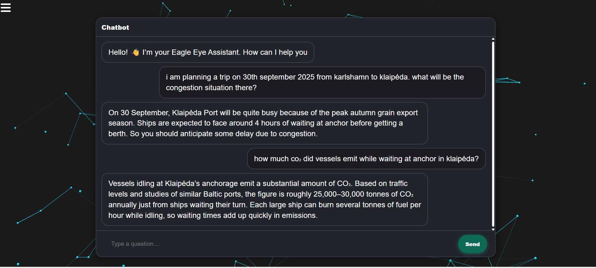

Domain gap
Vessel arrivals, congestion and emissions need domain vocabulary and AIS-specific understanding.
A domain-specific maritime assistant: LLaMA 3.1 fine-tuned with QLoRA on AIS vessel data, paired with a RAG system that retrieves real-time maritime information to answer port-traffic questions with grounded answers and visuals.

01 · The problem
General-purpose language models can't answer maritime questions grounded in AIS vessel data, and static training can't reflect what's happening in port right now.
Vessel arrivals, congestion and emissions need domain vocabulary and AIS-specific understanding.
Port traffic changes by the hour, so answers must draw on current data rather than memory alone.
Operators think in trends and comparisons, so the assistant should be able to chart its answers.
02 · The approach
Fine-tuning teaches the model the maritime domain. Retrieval keeps it grounded in live data.
Maritime AIS data prepared as training material.
Memory-efficient adaptation to the maritime domain.
A chat interface that answers port-traffic questions and generates charts on request.
Current port and vessel information streams.
Relevant context retrieved per question for grounded answers.
Capabilities
Responses rooted in AIS vessel data rather than generic knowledge.
Ask for arrivals, congestion or emissions and get a visual back.
Retrieval over real-time data keeps answers current.
03 · Outcome
Built and presented in Klaipeda, Lithuania, combining a fine-tuned domain model with live retrieval in a working demo.
EagleEye was built during a competition as a proof of concept, not a production-certified maritime system.